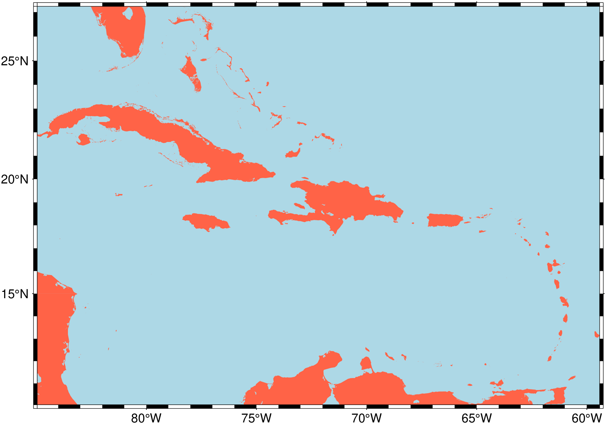

using GMT
earthregions("UN029")
Plots or automatically extracts grid/image over a named geographic region.
| Many predefined regions are provided via collections. These collections contain names, rectangular geographic boundaries, and access codes for various geographic areas. There are two types of collections: the DCW collection and other collections. The DCW collection is based on the Digital Chart of the World polygons and includes country boundaries (and states for larger countries). This collection allows users to combine regions as needed and plot the country’s boundaries. The other collections are defined by a rectangular boundary and include a name and code for each region. Together, these collections cover a wide range of areas, such as countries, continents, oceans, and more. Users can select a region by its code and then choose to create a map of that region or download topo/bathymetric data (in the form of a grid or image) for that specific area. The collections provide a convenient way to access and work with predefined regions. |
| Options |
name: It can be either the name of one collection or the code of one geographic region. If it is a collection name (one of: "DCW", "NatEarth", "UN", "Mainlands", "IHO", "Wiki", "Lakes") the regions of that collection are printed displaying the region’s boundaries, code and name. If, instead, a code is passed (codes are unique) then depending on the values of grid or dataset we either produce a map of that region (the default) or extract grid/image over it.
proj: In case a map is requested, pass the desired projection in form of a proj4 string or use the GMT projection syntax for that map. By default, we guess a good projection based on the map limits.
country: The particular case of the DCW collection let us also plot the country(ies) border lines. Set country=true to do that. Note that the DCW regions can be specified by a comma separated list of country codes, e.g. earthregions("PT,ES", country=true).
dataset: This option is used to select data download instead of map plotting. The available datasets are those explained in GMT Remote Datasets, which shortly are: "earth_relief", "earth_synbath", "earth_gebco", "earth_mask", "earth_day", "earth_night", "earth_geoid", "earth_faa", "earth_vgg", "earth_wdmam", "earth_age".
Note that "earth_day", "earth_night" are images that are not stored as tilles in the server, so the entire file is downloaded (only once and stored in your local ~.gmt/server directory). So, this may take a while for the first-time usage.
grid: A shorthand boolean option equivalent to dataset="earth_relief"
res: The dataset resolution. Possible resolutions are: “01d", "30m", "20m", "15m", "10m", "06m", "05m", "04m", "03m", "02m", "01m", "30s", "15s", "03s", "01s". However, they are not all available to all datasets. For example, only "earth_relief", "earth_synbath", "earth_gebco" exist for all those resolutions. In case a dataset is specified but no resolution, we make estimate of that resolution based on map extents and what would be good to create a map with 15 cm width.
registration: The dataset registration. Either grid or pixel. If not provided we choose one.
exact: The region boundaries in the collections were rounded to more friendly numbers (few decimals). This means that they differ slightly from the pure GMT (plot) numbers. Setting exact=true will force using the strict GMT limits.
This module is a subset of coast but uses also calls to grdcut, plot and the @file server hosted files mechanism. |
| Examples |
Show the contents of the Mainlands collection. We use this as example because it is a small one (contains only the continental parts of some countries that otherwise contain also distant islands) and therefore, good to show what information is displayed to the user.
using GMT
using PrettyTables # hide
io = IOBuffer() # hide
earthregions("Mainlands")
pato = joinpath(dirname(pathof(GMT))[1:end-4], "share", "named_regions", "") # hide
D = gmtread(pato * "Mainlands_collection.txt") # hide
PrettyTables.pretty_table(io, ["-85.9506" "-82.5561" "8.0329" "11.2167" "CRC" "Continental Costa Rica" "Mainlands"; # hide
"-81.0788" "-75.1848" "-4.99882" "1.43894" "ECC" "Continental Ecuador" "Mainlands"; # hide
"-9.56" "-6.18" "36.955" "42.16" "PTC" "Continental Portugal" "Mainlands"; # hide
"-9.29092" "4.31502" "35.1852" "43.7915" "ESC" "Continental Spain" "Mainlands"]; # hide
header=["W(lon)","E(lon)","S(lat)","N(lat)","Code","Region","Ref"], backend=Val(:html)) # hide
println("~~~" * String(take!(io)) * "~~~") # hideConsulting the UN collection we would have found that the “Caribbean” region has the code UN029. So, making a map of the Caribe is as simple as:
But the examples above do not let us plot the country’s borders that help referencing a map. For the time being that is only possible when we use the DCW collection. Next example shows a case with country borders. Also note that for the regions in the DCW (there are 248 of them) we can combine as many countries as we want.
Our last example shows how to extract a topo/bathymetric grid of the “Sea of Azov” and letting the earthregions select the grid resolution. We also show how to make a pretty map with very few commands. Note that for this later case we have much more plotting possibilities than with the earthregions function that is only a tool to select named regions and quickly visualize them.